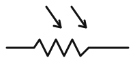
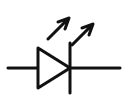

Bu sayfadaki görseller orijinal kurtarma değil, yeniden oluşturulmuş restorasyon taslaklarıdır.

99 × 55 px
blogger-arsiv/assets/restored/restored-e14-ldr.svg

64 × 53 px
blogger-arsiv/assets/restored/restored-e15-led.svg